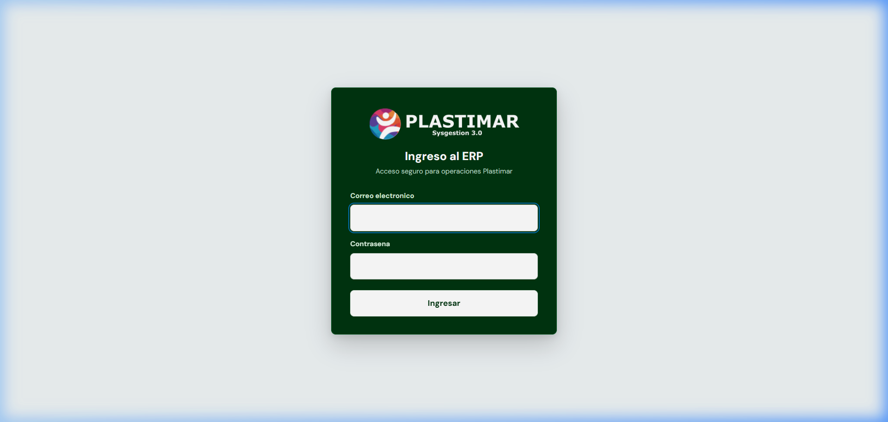
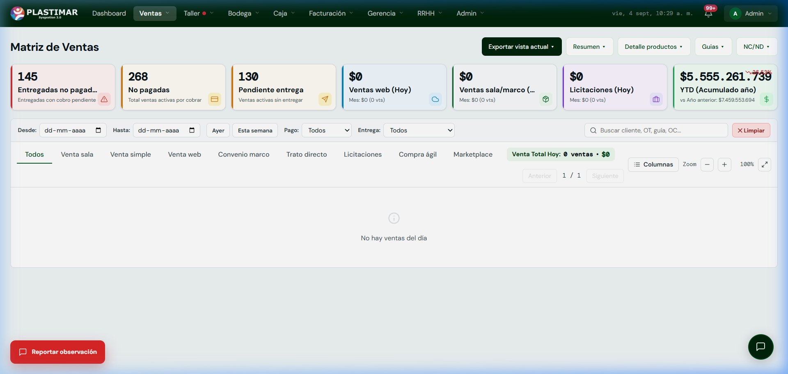

1. ¿Qué es esta documentación y cómo usarla?
Lectura General ObligatoriaBienvenido a la Marcha Blanca del SisGestión 3.0, el nuevo sistema de gestión integral de Plastimar. Este software unifica en una sola plataforma todas las operaciones de la empresa: desde la cotización y venta, hasta la fabricación en taller, control de inventario, despacho a clientes, cobranza y facturación electrónica ante el SII.
Para asegurar una transición ordenada, sin interrupciones y con total claridad en el trabajo diario, se ha diseñado una batería completa de guías prácticas. Este documento inicial es tu brújula maestra: explica cómo está organizada toda la documentación, qué contiene cada manual posterior y a qué documento debe dirigirse cada persona según su función.
Diseñado para el Usuario, sin Códigos ni Tecnicismos
Toda esta documentación está escrita en el lenguaje cotidiano de Plastimar. No contiene nombres de programación, código fuente ni tecnicismos informáticos: se enfoca exclusivamente en qué debes hacer en pantalla, dónde hacer clic y cómo resolver cualquier situación en tu jornada.
2. Mapa de la Suite Documental (Del Punto 2 en Adelante)
Estructura GlobalLa documentación está dividida en módulos independientes para que nadie tenga que leer manuales que no corresponden a su trabajo. La batería se compone de las siguientes piezas fundamentales:
DOC-01: Dossier para Gerencia
Público: Dueños, Directorio y Gerencia General.
Formato: Síntesis ejecutiva para lectura e impresión.
Explica la visión global del negocio: el flujo transversal de la venta de punta a punta, la autonomía de los módulos (por qué están aislados pero coordinados) y los 5 indicadores de control diario que la dirección debe monitorear.
Batería de Guías por Rol (DOC-02 al 08)
Público: Jefaturas y personal operativo de cada área.
Formato: Manuales prácticos paso a paso (SOP).
Guías especializadas con capturas reales ampliables a pantalla completa: Ventas y Licitaciones, Bodega e Inventario, Cadena de Despacho, Taller (Jefe y Operarios), Caja y Cobranza, y Facturación Electrónica DTE.
DOC-09: Widget de Observaciones y Falla
Público: Todos los usuarios del sistema.
Formato: Protocolo de reporte in-app en 1 clic.
Explica cómo usar el botón flotante [Reportar observación] en las pantallas operativas donde esté habilitado para enviar dudas, errores o mejoras al equipo técnico.
3. Matriz de Lectura: ¿Qué documento me corresponde?
Asignación por CargoUbica tu cargo o función en la siguiente tabla para saber qué documentos debes estudiar de forma prioritaria y cuáles puedes consultar como referencia:
| Cargo / Rol en Plastimar | Documento Obligatorio | Documento Complementario | Soporte Directo |
|---|---|---|---|
| Gerencia y Dirección General | DOC-01: Dossier Gerencia |
DOC-00: Guía Maestra |
Dashboard y Reportes |
| Ventas (Sala, Web, Convenio, Licitación) | DOC-02: Rol Ventas y Licitaciones |
DOC-04: Rol Despacho (seguimiento) |
Feedback Widget / IA |
| Bodega y Almacén | DOC-03: Rol Bodega y Logística |
DOC-04: Rol Despacho (picking/packing) |
Feedback Widget / IA |
| Despacho y Reparto | DOC-04: Rol Despacho |
DOC-03: Rol Bodega |
Feedback Widget / IA |
| Jefe de Taller (Producción) | DOC-05: Rol Taller y Producción |
DOC-03: Rol Bodega (materia prima) |
Feedback Widget / IA |
| Operarios de Taller (Corte, Confección) | DOC-05B: Ficha Rápida Operario |
-- | Terminal de Taller |
| Cajeros y Cobranza | DOC-06: Rol Caja y Cobranza |
DOC-02: Rol Ventas |
Feedback Widget / IA |
| Facturación y Finanzas | DOC-07: Rol Facturación DTE |
DOC-06: Rol Caja |
Feedback Widget / IA |
| Administrador del Sistema | DOC-08: Rol Administración |
DOC-09: Guía de Feedback |
Bandeja de Auditoría |
4. Las 5 Reglas de Oro Operativas de Plastimar
Cultura del ERPPara que el sistema funcione con exactitud matemática, todo el equipo debe respetar estos cinco principios inquebrantables. Aplican a todos los módulos y a todos los roles:
Regla 1: El Stock NUNCA se altera a mano en el producto
Para aumentar o disminuir el inventario, siempre debe existir un movimiento justificable: recepción de proveedor contra Orden de Compra, entrega a taller, merma documentada o despacho al cliente. Nunca se "digita" stock a ciegas.
Regla 2: Los Precios de Venta nacen del Costo del Proveedor
Antes de confirmar, revisa el precio calculado y cualquier descuento o autorización aplicable al canal. Si el valor no coincide con el acuerdo comercial, detente y escálalo.
Regla 3: Venta sin RUT de cliente se registra bajo CONSUMIDOR FINAL
En Venta Sala, cuando corresponde a consumidor final, el formulario permite dejar el cliente vacío. No crees clientes ficticios; para otros canales completa el cliente y los antecedentes exigidos.
Regla 4: Taller NO produce nada sin Orden de Trabajo (ODT) oficial
Ningún operario inicia producción sin una ODT visible, vigente y asignada. La automatización aplica a productos configurados para Taller; cualquier faltante debe informarse a la jefatura.
Regla 5: NINGÚN producto sale a reparto sin Guía de Despacho
Antes de cargar, Despacho debe revisar packing, cantidades, destinatario y estado autorizado de la Guía DTE 52. Este control es humano durante la Marcha Blanca: no se debe asumir que el sistema bloqueará toda salida incorrecta.
5. Primeros Pasos en el ERP (Vistas Generales)
Interfaz RealA continuación se presentan las pantallas principales que todo colaborador verá al interactuar con el sistema. Haz clic sobre cualquier imagen para desplegarla en pantalla completa en alta definición:
Acceso Seguro al ERP
Ingresa con el usuario asignado por Administración. No compartas la clave. Si recibiste una contraseña inicial, cámbiala siguiendo el procedimiento interno; la versión vigente no debe darse por garantizada como cambio forzado en el primer acceso.

Pantalla de Trabajo y Barra de Navegación Superior
Una vez adentro, la barra superior te da acceso directo a tus módulos de trabajo según tus permisos. En la parte central encontrarás los indicadores clave en tiempo real (ventas del día, órdenes por entregar, pagos pendientes y acumulado anual).

Cómo pedir ayuda o reportar un error durante la Marcha Blanca
En las pantallas operativas habilitadas verás el botón rojo [Reportar observación]. Si encuentras un error, falta un campo o tienes una duda, haz clic en él:
- El sistema incorpora la ruta y contexto disponible de la pantalla.
- Toma una captura; revisa que no exponga datos sensibles innecesarios.
- Puedes marcar con el mouse el botón o tabla que causó la duda.
- Tu reporte llega de inmediato al equipo de desarrollo y soporte.

¿Qué sigue ahora?
Ahora que conoces la estructura general y las 5 Reglas de Oro, dirígete al manual específico correspondiente a tu área según la Matriz de Lectura: